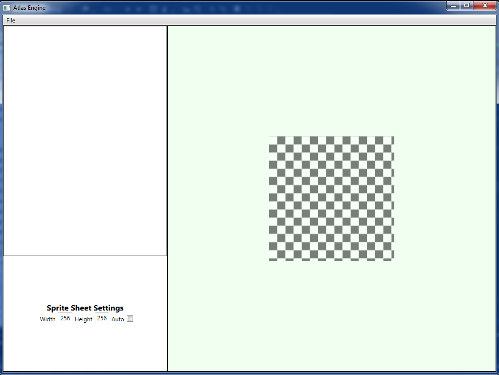
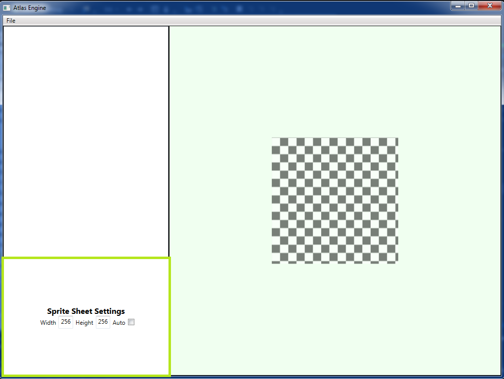

Creates a sprite sheet that converts separate images into a single image. An atlas file (description of the location of each image on the sheet in xml form) is also created when the sprite sheet is saved.


Manually set the width of the sprite sheet.
Manually set the height of the sprite sheet.
Sprite sheet is sized for the images loaded automatically.
Create a new empty sprite sheet and remove all previous sprites added before.
Choose the location and name of the sprite sheet and atlas file. Note: The name of the sprite sheet will be the name chosen for the atlas xml file with a .png extension and located in same directory.
Select one or more image files to add to the sprite sheet.
Closes the program.